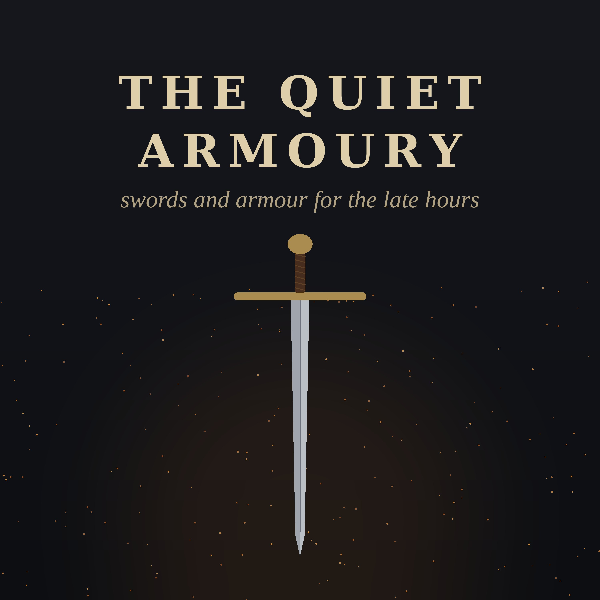

The Quiet Armoury
Swords and armour through history, told slowly: how each one was made, why it changed, and the people who carried it. Calm stories for the late hours, read by a synthetic voice.
Listen in your podcast app, or add the feed: feed.xml